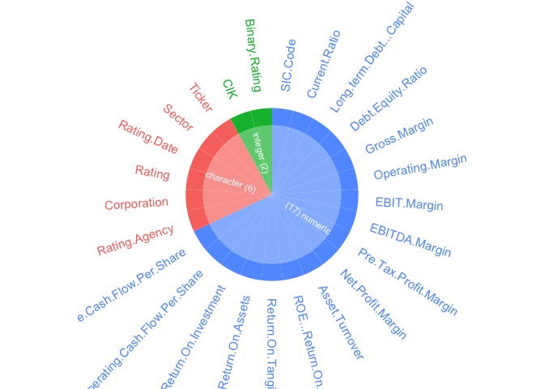
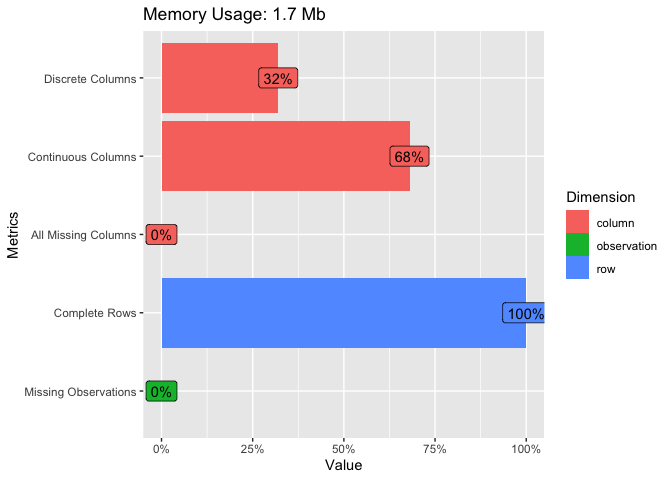
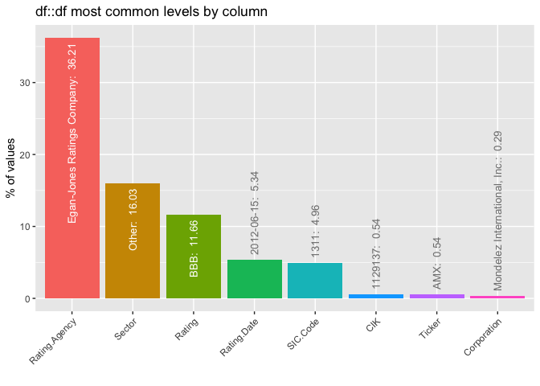
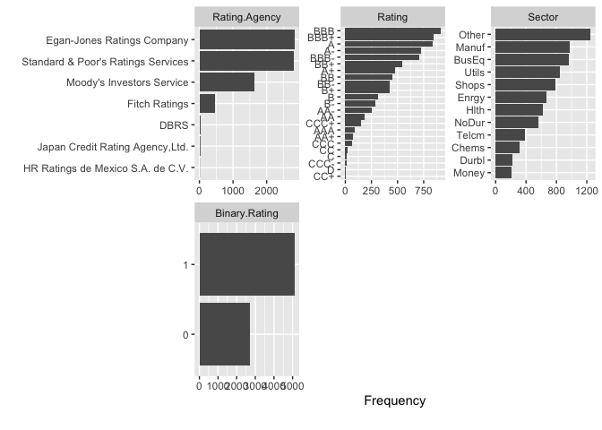
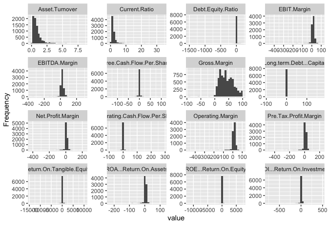
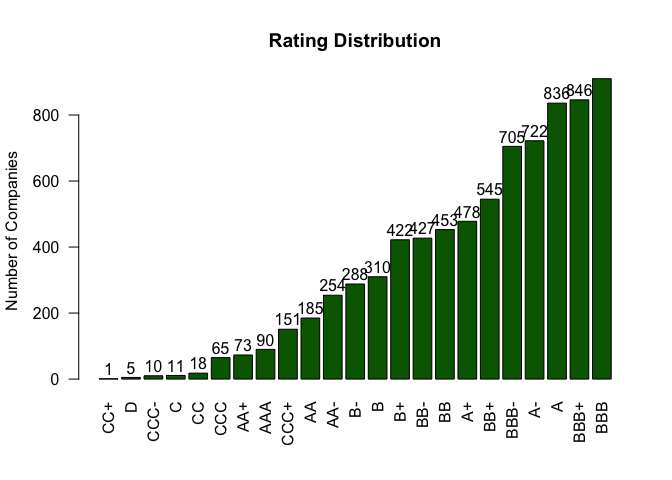
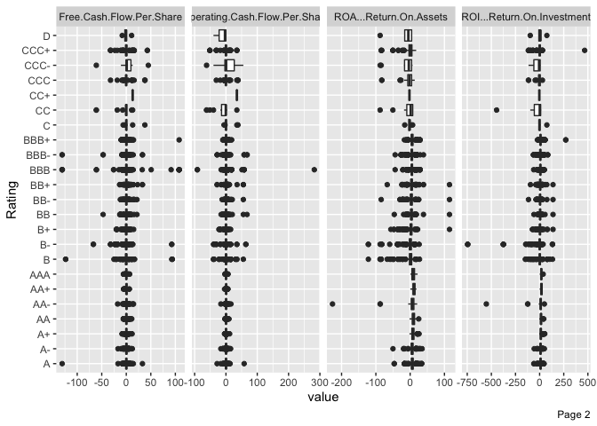
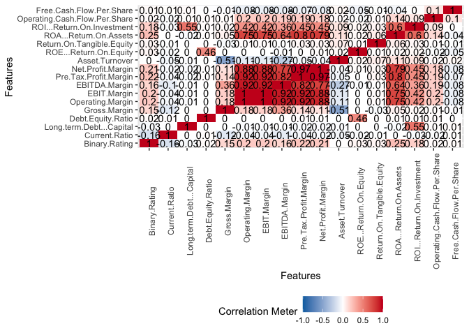

Exploratory Data Analysis
Contents
Exploratory Data Analysis#
Exploratory Data Analysis enables us to understand the dataset clearly. It also helps in cleaning the data which will further help us to maximize the output from the machine learning models.
library(DataExplorer)
library(dplyr)
##
## Attaching package: 'dplyr'
## The following objects are masked from 'package:stats':
##
## filter, lag
## The following objects are masked from 'package:base':
##
## intersect, setdiff, setequal, union
library(inspectdf)
df <- read.csv("./../data/classification_data/input/corporate_credit_rating.csv")
head(df)
## Rating.Agency Corporation Rating
## 1 Standard & Poor's Ratings Services American States Water Co. A-
## 2 Standard & Poor's Ratings Services Automatic Data Processing Inc. AAA
## 3 Standard & Poor's Ratings Services Avnet Inc. BBB-
## 4 Standard & Poor's Ratings Services California Water Service Co. AA-
## 5 Standard & Poor's Ratings Services Cardinal Health Inc. A
## 6 Standard & Poor's Ratings Services Cardinal Health Inc. BBB+
## Rating.Date CIK Binary.Rating SIC.Code Sector Ticker Current.Ratio
## 1 2010-07-30 1056903 1 4941 Utils AWR 1.1507
## 2 2010-09-16 8670 1 7374 BusEq ADP 1.1129
## 3 2010-11-23 8858 1 5065 Shops AVT 1.9276
## 4 2010-06-29 1035201 1 4941 Utils CWT 0.8358
## 5 2010-07-14 721371 1 5122 Shops CAH 1.2931
## 6 2010-09-16 721371 1 5122 Shops CAH 1.2931
## Long.term.Debt...Capital Debt.Equity.Ratio Gross.Margin Operating.Margin
## 1 0.4551 0.8847 77.6230 19.4839
## 2 0.0072 0.0073 43.6619 19.8327
## 3 0.2924 0.4255 11.9008 3.3173
## 4 0.4708 0.9491 64.5096 18.4549
## 5 0.2644 0.4036 3.8385 1.3269
## 6 0.2644 0.4036 3.8385 1.3269
## EBIT.Margin EBITDA.Margin Pre.Tax.Profit.Margin Net.Profit.Margin
## 1 19.4839 28.9834 13.6093 8.3224
## 2 19.8327 23.9379 20.8699 13.5690
## 3 3.3173 3.6338 3.0536 2.1418
## 4 18.4549 27.9377 15.1135 9.0246
## 5 1.3269 1.5847 1.2304 0.6518
## 6 1.3269 1.5847 1.2304 0.6518
## Asset.Turnover ROE...Return.On.Equity Return.On.Tangible.Equity
## 1 0.3173 8.1724 8.1978
## 2 0.3324 22.0354 47.2858
## 3 2.4620 13.6376 16.7991
## 4 0.2946 9.6412 9.7015
## 5 4.9276 11.1256 19.4184
## 6 4.9276 11.1256 19.4184
## ROA...Return.On.Assets ROI...Return.On.Investment
## 1 2.6385 4.4530
## 2 4.4944 21.8765
## 3 5.2731 9.6494
## 4 2.6583 5.1018
## 5 2.9364 8.1844
## 6 2.9364 8.1844
## Operating.Cash.Flow.Per.Share Free.Cash.Flow.Per.Share
## 1 1.9957 -0.1333
## 2 0.2501 0.3132
## 3 -7.6079 -7.3231
## 4 1.7438 -0.8999
## 5 1.9725 2.4174
## 6 1.9725 2.4174
Features Analysis#
colnames(df)
## [1] "Rating.Agency" "Corporation"
## [3] "Rating" "Rating.Date"
## [5] "CIK" "Binary.Rating"
## [7] "SIC.Code" "Sector"
## [9] "Ticker" "Current.Ratio"
## [11] "Long.term.Debt...Capital" "Debt.Equity.Ratio"
## [13] "Gross.Margin" "Operating.Margin"
## [15] "EBIT.Margin" "EBITDA.Margin"
## [17] "Pre.Tax.Profit.Margin" "Net.Profit.Margin"
## [19] "Asset.Turnover" "ROE...Return.On.Equity"
## [21] "Return.On.Tangible.Equity" "ROA...Return.On.Assets"
## [23] "ROI...Return.On.Investment" "Operating.Cash.Flow.Per.Share"
## [25] "Free.Cash.Flow.Per.Share"
column_types <- inspect_types(df)
column_types
## # A tibble: 3 × 4
## type cnt pcnt col_name
## <chr> <int> <dbl> <named list>
## 1 numeric 17 68 <chr [17]>
## 2 character 6 24 <chr [6]>
## 3 integer 2 8 <chr [2]>
column_types %>% show_plot()

Columns such as CIK, and SIC Code have wrong data types associated with them.
Column Name |
Present Date Type |
Target Data Type |
|---|---|---|
CIK |
integer |
character |
SIC Code |
double |
character |
Wrong data types associated columns
# Convert wrongly associated data types to correct ones.
df$CIK <- as.factor(df$CIK)
df$SIC.Code <- as.factor(df$SIC.Code)
Let us visualize the structure of the dataset.
plot_str(df)
introduce(df)
## rows columns discrete_columns continuous_columns all_missing_columns
## 1 7805 25 8 17 0
## total_missing_values complete_rows total_observations memory_usage
## 1 0 7805 195125 1772048
plot_intro(df)

There are no missing values in the dataset which is a boon in disguise. Also the number of categorical numbers to deal with and convert to machine readable, interpretable numbers are quite less as compared to the number of numerical columns. Moreover, not every categorical column is relevant for creating a model.
inspect_imb(df)
## # A tibble: 8 × 4
## col_name value pcnt cnt
## <chr> <chr> <dbl> <int>
## 1 Rating.Agency Egan-Jones Ratings Company 36.2 2826
## 2 Sector Other 16.0 1251
## 3 Rating BBB 11.7 910
## 4 Rating.Date 2012-06-15 5.34 417
## 5 SIC.Code 1311 4.96 387
## 6 CIK 1129137 0.538 42
## 7 Ticker AMX 0.538 42
## 8 Corporation Mondelez International, Inc. 0.295 23
inspect_imb(df) %>% show_plot()
## Warning: `guides(<scale> = FALSE)` is deprecated. Please use `guides(<scale> =
## "none")` instead.

The above graph shows the imbalance in the most dominant class in the categorical variables. Following are some observations that can be made:
The Rating Agency is dominated by “Egan-Jones Ratings Company”, but it will more useful to know credit rating agency which does not have enough representation.
CIK, Ticker, and Corporation should have very high variance of categories and hence will be useful to remove them before modelling.
The dataset is led by companies with “BBB” rating, though 11.66% representation by the dominant may not be consider as a serious imbalance which will require treatment. But it will be noteworthy to find the rating that is under-represented which can be treated as outliers, or will need specialized treatment such as oversampling.
These variables will be analyzed separately in the univariate analysis section.
Univariate Analysis#
Categorical Variables#
plot_bar(df)
## 5 columns ignored with more than 50 categories.
## Corporation: 1377 categories
## Rating.Date: 1414 categories
## CIK: 686 categories
## SIC.Code: 240 categories
## Ticker: 678 categories

data.frame(table(df$Rating.Agency))
## Var1 Freq
## 1 DBRS 26
## 2 Egan-Jones Ratings Company 2826
## 3 Fitch Ratings 477
## 4 HR Ratings de Mexico S.A. de C.V. 5
## 5 Japan Credit Rating Agency,Ltd. 22
## 6 Moody's Investors Service 1636
## 7 Standard & Poor's Ratings Services 2813
The number of companies rated by last three credit rating agencies are too few to be useful for analysis. It will be beneficial to remove them from the dataset. Thus, data for following credit rating agencies will be removed:
DBRS
Japan Credit Rating Agency, Ltd.
HR Ratings de Mexico S.A. de C.V.
# Find data associated with ratings having less 10 observations
ratings.count.df <- data.frame(table(df$Rating))
colnames(ratings.count.df)
## [1] "Var1" "Freq"
rtl.data <- ratings.count.df[ratings.count.df$Freq<10,]
rtl.data
## Var1 Freq
## 19 CC+ 1
## 23 D 5
Data associated with these ratings will also be removed since, they are insufficient for model to generate any insight.
There are no categorical columns which have low variance and hence no data treatment is required for that consideration.
plot_histogram(df)

Almost every numerical columns seems to have data points which can be considered as outliers. But it is not appropriate to alter those data points as they are crucial for modelling the data. More appropriate plot to identify the columns with extreme values is box plot (to be analyzed in the next section).
Multivariate Analysis#
plot_boxplot(df, by='Rating')

Some prominent outliers are present in the following columns:
Asset Turnover Ratio
Long-term Debt Capital
Return on Tangible Equity
Return on Assets
Return on Equity
Operating Cash Flow Per Share
Return on Investments
Though outliers are present in individual features but they may not be true outliers and there is a possibility of information by removing them. To mitigate this issue, it will be more appropriate to consider an observation as a whole to find the true outliers.
Correlation Analysis#
Correlation analysis can only be perform on numerical columns and hence appropriate data needs to be subset.
# Select data with only numerical columns
num.data <- df %>% dplyr::select(where(is.numeric))
plot_correlation(num.data)

It can be observed that Operating Margin, EBIT Margin, EBITDA Margin, Pre Tax Profit Margin, Return on Assets and Net Profit Margin are highly correlated with each other. Hence it will be better to remove correlated columns. Consider the threshold to be 0.7.